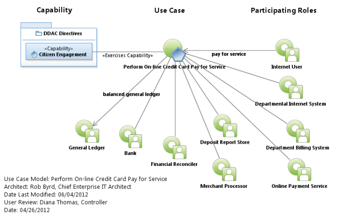
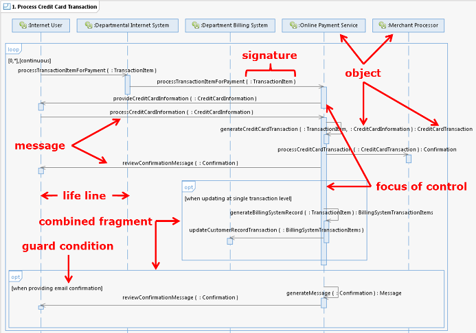
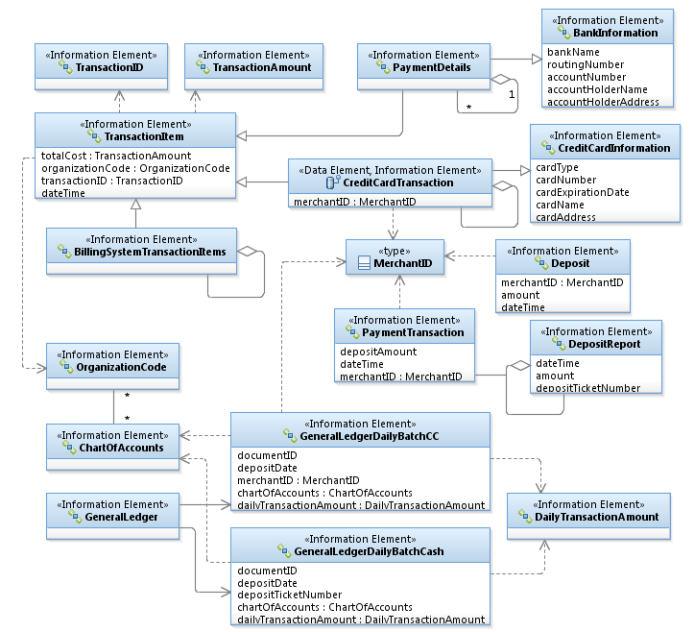

| ||||||
|
Anatomy of the Use Case This white paper is intended for anyone who wishes to learn about the anatomy of the Unified Modeling Language (UML) Use Case and the guiding principles used in its development. This paper discusses the parts of the use case, introduces terminology, definitions and relationships between the parts. UML is a standardized general-purpose modeling language in the field of object-oriented software engineering. The standard was created and is managed by the Object Management Group. It was first added to the list of OMG adopted technologies in 1997, and has since become the industry standard for modeling software-intensive systems.
The Use Case Model provides an approach for defining a process that delivers result of value (ROV) and is the foundational instrument of a skilled Enterprise Architect. Using an object-oriented analysis and design (OOAD) [1] method, the architect analyzes the required interacting objects referred to as Capability Roles. Roles are shown as green actors with an oval in left corner (Figure 1) and represent the functional responsibility of people or systems (i.e., objects). Each object represents a role of interest of the subject modeled by the Use Case. Object-oriented analysis applies object-modeling techniques to analyze the functional responsibilities and interface requirements for a system; therefore, the Use Case Model represents the requirements of the capability being modeled - ex., Citizen Engagement. This approach eliminates the need for alternative requirements management tooling used to define system functional requirements.
The use case diagram (Figure 1) is used during collaboration sessions with subject matter experts (SMEs) to develop the scope of the use case, define participating objects, identify important triggers and define outcomes. Similar to a traditional system engineering context diagram, the use case diagram is useful in guiding stakeholders through scope and concept development. The following is an example Use Case Model developed to collect functional requirements to Perform On-line Credit Card Pay for Service a city-wide initiative to provide citizens the ability to pay for city services using Web enabled methods. It has been suggested that a non-technical person may not be able to grasp the use case development process; however, a skilled enterprise architect can guide a team through the process with no prior knowledge or experience. In fact, the Unified Modeling Language [1] was created for the purpose of eliciting functional needs from non-technical stakeholders. The following sample was built through the expert consultation of the City's Controller Office SMEs with little to no modeling background.
The first step in the use case development process is to develop a paragraph that defines the scope - sometimes it's useful to develop mission and vision statements as well depending on the complexity and scope of the subject requiring more than one use case. The scope statement is useful in focusing the subject matter team on a common understanding of the boundaries of the use case and its ROV. In our example, one might presume the value (outcome) of our use case is a successful online transaction from the point of view of the Internet User. In actuality, the outcome is a balanced general ledger of which the Internet User takes part - hence the usefulness of a scope statement. This process formulates the operational (business) concept and aids in discovery of participating roles to be used as objects in future views of the model. Scope: Provides credit card transaction services to allow Internet Users to pay for City of Austin services and fees. Performs daily deposits, reconciles against department billing systems and updates the City's general ledger. 
Through enterprise architect led collaborations, the SMEs mature the Use Case Diagram. Once mature, the architects and SMEs analyze the processes and interactions (dialog between objects - i.e., capability roles on use case diagram) using an iterative approach to develop an Interaction Overview (Figure 3) in the form of a UML Activity Model. The iterative approach begins with a single UML Sequence Digram (Figure 2) and matures to a selected set of interactions each represented by their individual sequence diagram (or sometimes a swim-lane activity model - discussed later). In this example, we determined 5 interactions - i.e., 5 sequence diagrams (e.g., 5 activities on Interaction Overview). The overall business rules (i.e., decision node, parallel [synchronized] activities, guard conditions, etc.) are captured on the Interaction Overview. An object-oriented interaction is composed of objects [1] - objects can be either an instance of a capability role on a sequence diagram or instance of an information element on an activity model. Hence the term object-oriented because the model is oriented toward the object rather than oriented toward the process (used by more traditional modeling methods). Each activity on the Interaction Overview in the model presents input object(s) that trigger the activity and the resulting object(s) from the collaboration of objects on the sequence diagram. Collaboration between objects involves each sending messages to each other. Sending a message differs from calling a function in that when a target object receives a message, it decides what function to carry out to service that message. The same message may be implemented by many different functions, the one selected depending on the state of the target object and the guard condition set on the relevant Combined Fragment. The sequence diagram uses Combined Fragments to define loops, alternate or optional flows based on the business rule [guard condition] - this is a new feature introduced by UML version 2.0 to simplify business rule capture at various stages of the modeling process. The sequence diagram below uses both loop and opt(ional) combined fragments to define continuous loop functions as well as optional sequence events based on condition in [brackets]. The green rectangles (Figure 3) represent the Information Elements used by messages; and therefore, represent the Interaction Overview as they travel through the activity's UML pins - object interactions are shown on the sequence diagram. Their state is captured by naming an instance of the information element on the activity diagram. On the surface this all seems a bit complicated; however, with a some practical use it becomes quite intuitive. The value of the UML over more traditional methods of modeling is in it's ability capture complex processes and accurately represent design system interaction (developers call system behavior). In the end, the Use Case Model accurately captures business needs useful for future integration and evolution of the capability over time. Sequence Diagram for Step 1. Process Credit Card TransactionNote: This example presents only one sample sequence diagram. For the use case model to be complete, requires steps 2, 3, 4 and 5 sequence diagrams shown by following the link. The overview of the interactions of the sequence diagrams are shown on Figure 3, Use Case Activity Model.  The sequence diagram is the most important architectural artifact in a UML model. Its mastery by the enterprise architect is essential and the most difficult diagram to learn. The sequence diagram identifies the information elements being passed to the various Capability Roles (objects) and assigns functional responsibility of the object identified on the use case diagram. Many architects mistake the direction of the arrow as meaning the direction of information flow, but the message does not necessarily represent information flow. Rather, the direction of the arrow points to the object with functional responsibility. The servicing end of the arrow (opposite end of arrow) is the object making the service request. Sometimes we use reflexive messages when an object makes a request on itself to transform information elements. An example is when the Online Payment Service generates a CreditCardTransaction using both the TransactionItem and CreditCardInformation (reference Figure 2). Not unlike the interaction overview, the guard conditions on the combined fragments further define the business rules of the Use Case Model. The interaction overview means exactly as it states - an overview of the interactions of the sequence diagrams. It establishes the business rules and decision points guided by the selected instance of the use case. For example, one instance of the use case may batch process the billing system and another instance may reconcile accounts. This approach maximizes the reusable nature of the business process and reduces implementation complexity. Activity Model - Interaction Overview
Each activity (blue round corner rectangles) on the interaction overview (Figure 3) is linked to its defined sequence diagram providing a description of the dialog between the objects (messages on the UML sequence diagram). Using the activity diagram above, select (it's clickable) an activity to see its related sequence diagram view. Select Step 2 and study the related sequence diagram and observe its information elements on the activity diagram until you understand what's going on. Each message on the sequence diagram contains an information element in the signature [ex., seqeunceMessage( :Signture ) : ReturnObject] of the message with functional responsibility assigned to the object by the direction of the arrow. For example on Figure 2, the sequence diagram begins when the Internet User makes a request on the Department Internet System to processTransactionItemForPayment using the TransactionItem information element as its signature. The Department Internet System then passes the same function to the Online Payment Service; therefore, capturing the system functional need for the Internet System to pass credit card transaction requests to the Online Payment Service. To further understand the relationships or dependencies of information elements, the architect develops a class diagram. Class Diagrams (Figure 4) capture the association (dependencies) of the information elements and represent the logical data model of the use case. Database administrators use the logical data model to develop relational databases to implement the object flow defined by the use case. In the future, the logical data model guides the Enterprise Database layer of the ISO model. Another value of the UML is in its ability to put information elements in context of its use better guiding capability realization by applications developers or to evaluating commercial-off-the-shelf-software (COTS) for its ability to implement the business process when certain information elements provide important outcomes. Logical Data Model
It's important to understand that use case model development is an "iterative" approach to modeling until all the interactions and business rules are thoroughly defined. For example, the team may discover new capability roles when modeling the sequence of events requiring updates to the use case diagram or possibly a modification of the scope of the use case. Some simple Use Case Models may not require an Interaction Overview - this occurs when the Use Case Model consists of just one sequence diagram. Although not a preferred approach, activity swim-lane models can substitute for sequence diagrams. This alternative is useful when business process analysis is the major consideration and the stakeholder community better understand swim-lane models. Much caution must be exercised, however, when using swim-lane models. Coined by Aaron Brown, "the architect can easily fall into the function trap when using swim-lane activity models." The function trap occurs when the architect places too much emphasis on the process (function) and less on the object (capability roles and information elements). In OOAD, objects are used to derive process verses the function trap where process derives objects. On the surface this notion does not appear very profound. From my experience, however, it's fun to observe the new architect when this apparently subtle concept is fully understood - this frequently generates an emotional response! This understanding is a significant differentiator between the Enterprise Architect and Senior Enterprise Architect and some architects are unable to cross this mental shift in thinking. I recommend modeling the sequence diagram because information elements are foremost and needed in the signature of the message requiring greater object-oriented discipline. Swim-lane activity models frequently lead to traditional methods of process modeling without object consideration and quickly lead to the function trap of a traditional modeling method producing significantly less useful architectural results. If, however, swim-lane models are deemed useful, it is highly encouraged the new architect develop the sequence diagram first, then manually convert the sequenced model to a swim-lane activity model. In addition, the activity model is difficult to develop during collaboration sessions and requires a great deal of experience. A highly skilled architect with good object-oriented experience can learn to develop swim-lane activity models directly, but not until they obtain the natural skill to recognize the importance of behavior when developing the activity viewpoint. The RSA activity design tool is clunky compared to its sequence diagram design element. This is a result of the UML community generally not seeing much value in the activity model because they have no architectural significance. References: Rob Byrd | City of Austin | ||||||
 |